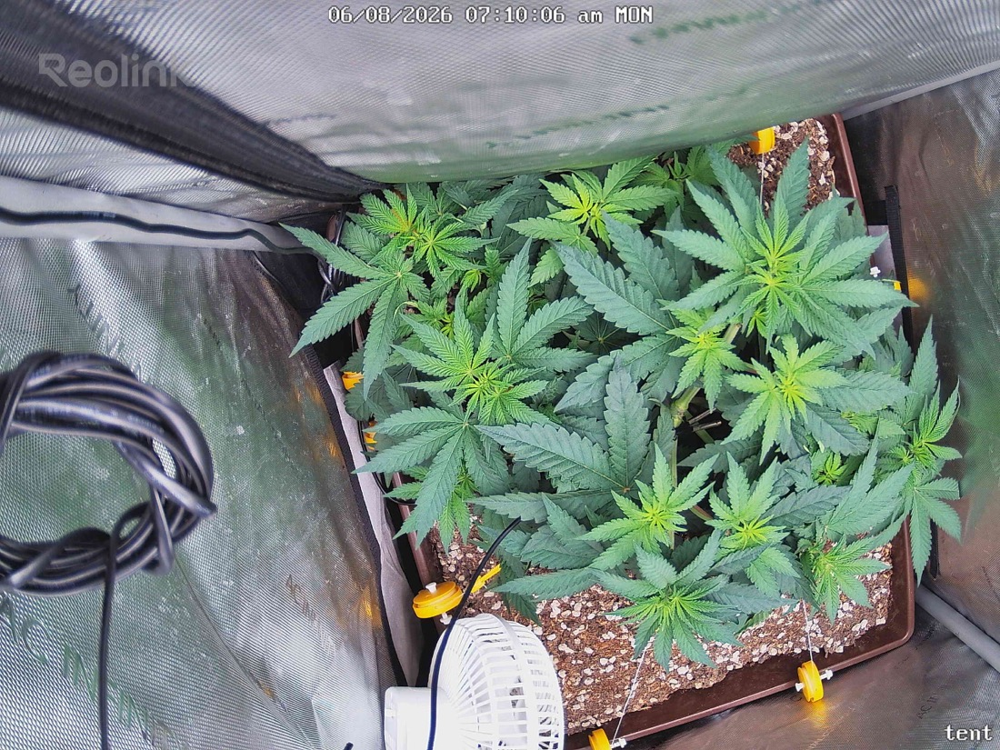

← All reports
Jun 8, 2026
Mon Jun 8, 2026 — 7:10 AM

Prognosis
Daily check-in — Day 6 of flip (2026-06-08)
- Growth/structure: Noticeable vertical lift across nearly every training point — colas have stretched up out of the flat LST canopy compared to yesterday. Classic early-flower stretch kicking in on schedule (day 5–6 post-flip).
- Canopy fill: More even coverage; the lower/outer sites you trained down are now reaching for light and leveling with the inner tops. LST is paying off — looks like 8–12 viable bud sites already.
- Color/posture: Leaves remain deep, uniform green. No tacoing, no cupping, no clawing. Praying slightly upward at the tops = happy under the 600 PPFD.
- Stress signs: None visible. No tip burn, no interveinal yellowing, no spotting, no pests, no powdery residue. Soil surface looks appropriately moist from yesterday's 1gal bottom-water.
- Phase check: Right on track. ~6 weeks from germ, topped + LST'd, day 6 of 12/12 — stretch is just starting and will likely continue through ~day 14–21. Plant size matches the 2×2 footprint well.
- Light ramp answer (from 6/3 question): You can begin ramping now that stretch is underway and no stress is showing. Move 600 → 700 over the next 5–7 days in ~25 PPFD steps. Once pistils are well-formed and stretch slows (~day 21), push toward 800–900. SF-2000 Pro in a 2×2 can comfortably deliver 900–1000 in mid-flower if VPD/temps stay in range.
- Yield estimate: Rough ballpark for a single topped + LST'd photo in a 2×2 under SF-2000 Pro with clean execution: 2–3.5 oz dry. Bud sites: count ~10–14 main colas plus secondary popcorn.
- Next actions: No action needed today. Next water likely 6/11. Consider one more light tuck/spread before the canopy locks up in week 2 of flower.
Overall: Healthy, vigorous, textbook early-flower stretch — keep the current plan and start the slow PPFD climb.